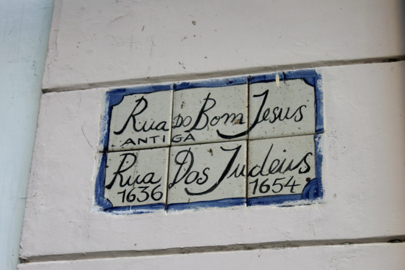
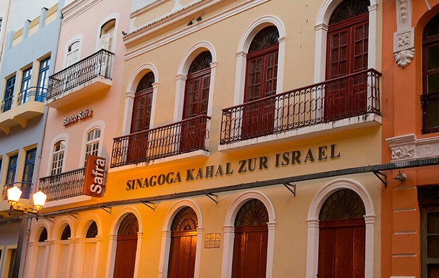
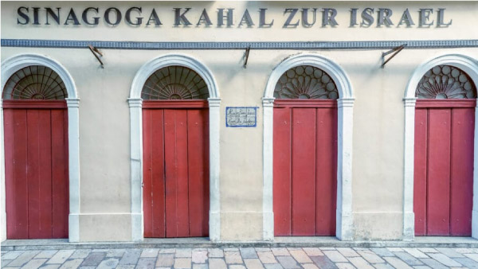

Considerada a rua mais bonita do bairro, ou melhor a terceira rua mais bonita do mundo pela revista americana Architectural Digest! A Rua do Bom Jesus é a única do Brasil que apareceu na lista, que tem 31 outras vias.
Além dos prédios coloridos e das palmeiras altas, fatos destacados na publicação ela abriga a primeira sinagoga nas Américas, Kahal Zur Israel, que é um dos marcos mais importantes da presença judaica no Brasil colônia e pode ser visitada.
História
A Rua do Bom Jesus recebeu esse nome devido o arco de Bom Jesus, que é um antigo portal da capital. Além disso, é considerada a via mais antiga da cidade.
Lúcia Gastar, bibliotecária da Fundação Joaquim Nabuco, disse que desde a ocupação holandesa essa já era a via mais importante de Recife. Era por aqui que viajantes vindo de Olinda chegavam na cidade.
Antiga Rua do Bode
Antes de se chamar Bom Jesus, aqui era a Rua do Bode e depois foi apelidada de Rua dos Judeus, pois havia uma grande concentração de israelitas pela região. “Quando eles deixaram Pernambuco, foi denominada de Rua da Cruz”, diz Lúcia.
O nome Rua do Bom Jesus veio em 1870, após a aprovação do Conselho Municipal. A proposta da troca partiu do Instituto Arqueológico, Histórico e Geográfico Pernambucano.
O que mais encontra-se?

Nessa rua você encontra também a Embaixada dos Bonecos Gigantes, tipo um museu pra esses bonecos que são marca registrada do nosso Carnaval. O lugar consiste basicamente de uma sala cheia de bonecos, então não espere muito da visita, mas é interessante ver de perto essas versões gigantes de figuras célebres como Ariano Suassuna, Bowie, Carmen Miranda e Darth Vader.
Balé Popular do Recife
Localizado no número 143 dessa famosa rua, fundado em maio de 1977, foi um dos primeiros grupos de dança profissional de Pernambuco e é o mais antigo em constante atuação. Ele atravessou o tempo levando os conteúdos da cultura popular nordestina para várias gerações. A companhia já se apresentou em importantes festivais do país e divulgou a cultura da terra em países como Israel, Espanha, Portugal, França, Holanda, Costa do Marfim, Cuba, Canadá, Estados Unidos, Peru, Argentina, China e Venezuela, além de escolas de Ensino Fundamental e Médio da Região Metropolitana de Paris e também de Recife.
Através do Projeto de Lei 321/2017, proposto pela vereadora Ana Lúcia, e aprovado na Câmara Municipal do Recife, que declara o grupo como Patrimônio Cultural Imaterial do Recife, fortalecendo o grupo que ao longo de tantos anos documenta, divulga, preserva e ensina a dança popular nordestina para a população do Recife.